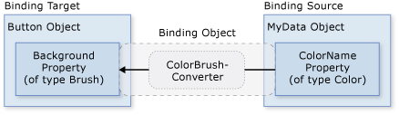

Общие сведения о привязке данных
Windows Presentation Foundation (WPF) Привязка данных обеспечивает простой и последовательный способ представления и взаимодействия с данными приложениях. Можно связывать элементы с данными из различных источников данных в виде объектов CLR и XML. ContentControlнапример Button и ItemsControl, например ListBox и ListView у встроенной возможностью включения гибких стилей для отдельных элементов данных и коллекций элементов данных. Представления сортировки, фильтрации и группировки могут быть организованы поверх данных.
Функции привязки данных в WPF имеют несколько преимуществ перед традиционными моделями, включая широкий диапазон свойств, которые внутренне поддерживают привязку данных, гибкое представление данных UI и четкое разделение бизнес-логики и UI.
В этом разделе сначала будут рассмотрены основные для понятия WPF привязки данных, а затем — использование Binding класс и других возможностей привязки данных.
Понятие привязки данных
Привязка данных — это процесс установки соединения между UI приложения и бизнес-логикой. Если для привязки заданы правильные настройки, а изменения значений данных сопровождаются правильными уведомлениями, привязанные к данным элементы автоматически отражают изменения. Привязка данных может также означать, что, если внешнее представление данных в элементе изменяется, то базовые данные могут автоматически обновляться для отражения изменений. Например, если пользователь изменяет значение в TextBox элемент, базовое значение данных автоматически обновляется в соответствии с изменениями.
Привязка к данным обычно используется для того, чтобы поместить серверный или локальные данные конфигурации в формы или другие элементы управления UI. В WPF эта концепция расширяется и уже включает привязку широкого диапазона свойств к различным источникам данных. В WPF свойства зависимости элементов могут быть привязаны к объектам CLR (включая объекты ADO.NET или объекты, связанные с веб-службами и веб-свойства) и к данным XML.
Привязку данных можно рассмотреть на примере следующего UI приложения со страницы примера привязки данных.
Выше приведен UI приложения, который отображает список лотов аукциона. Приложение демонстрирует следующие возможности привязки данных.
Содержание ListBox привязан к коллекции AuctionItem объектов. Объект AuctionItem имеет такие свойства, как Description, StartPrice, StartDate, Category, SpecialFeatures и т. д.
Данные (AuctionItem объектов) в ListBox является шаблоном, чтобы описание и текущая цена были показаны для каждого элемента. Это делается с помощью DataTemplate. Кроме того, внешний вид каждого элемента зависит от значения SpecialFeatures отображаемого объекта AuctionItem. Если значением SpecialFeatures объекта AuctionItem является Color, элемент имеет синюю границу. Если значением является Highlight, элемент имеет оранжевые границы и помечается звездочкой. Раздел Создание шаблонов данных содержит сведения о создании шаблонов данных.
Пользователя можно группировать, фильтровать или сортировать данные с помощью CheckBoxпредоставленных. На приведенном выше рисунке, «Группировать по категории» и «Сортировать по категориям и дате» CheckBoxвыбраны. Можно увидеть, что данные группируются по категориям продуктов, а имена категорий приводятся в алфавитном порядке. Из рисунка трудно заметить, что элементы в каждой категории также сортируются по начальной дате. Это делается с помощью представления коллекции. Представления коллекций рассматриваются в разделе Привязка к коллекциям.
Когда пользователь выбирает элемент, ContentControl отображает сведения о выбранного элемента. Это называется Сценарий привязки "основной-подробности". Сведения об этом типе скрипта привязки см. в разделе Сценарий привязки "основной-подробности".
Тип StartDate свойство DateTime, который возвращает дату, включая время с точностью до миллисекунды. В этом приложении пользовательский преобразователь использовался для отображения даты в укороченном формате. Сведения о преобразователях см. в разделе Преобразование данных.
При нажатии кнопки Добавить продукт появляется следующая форма.

Пользователь может изменить поля формы, просмотреть список продуктов с помощью панелей краткого предварительного просмотра и подробного предварительного просмотра и нажать кнопку Отправить, для добавления данных нового продукта. К новой записи будут применимы все существующие функциональные возможности группировки, фильтрации и сортировки. В этом конкретном случае элемент, введенный на приведенном выше рисунке, будет отображаться как второй элемент в категории Компьютер.
Не на этом рисунке приведена логика проверки, предоставленная в Дата начала TextBox. Если пользователь вводит недопустимую дату (недопустимый формат или прошедшую дату), пользователь будет уведомлен с помощью ToolTip и красным восклицательным знаком рядом с полем TextBox. Сведения о создании логики проверки см. в разделе Проверка данных.
Прежде чем перейти к другим описанным выше возможностям связывания данных, в следующем разделе обсудим основные понятия, важные для понимания привязки данных WPF.
Основные понятия привязки данных
Независимо от того, какой элемент привязывается и какой источник данных используется, каждая привязка всегда соответствует модели, показанной на следующем рисунке.
Как показано на приведенном выше рисунке, привязка данных является по существу мостом между целью привязки и источником привязки. На рисунке представлены следующие основные концепции привязки данных WPF.
Как правило, каждая привязка имеет четыре компонента: объект цели привязки, свойство цели, источник привязки и путь к значению используемого источника привязки. Например, если требуется привязать содержимое TextBox для имя свойство сотрудника объекта является целевым объектом TextBox, целевым свойством является Text свойство, используйте значение имя, и исходный объект является сотрудника объекта.
Целевое свойство должно быть свойством зависимостей. Большинство UIElement свойств являются свойствами зависимостей, и большинство свойств зависимостей, за исключением доступных только для чтения, по умолчанию поддерживает привязку данных. (Только DependencyObject типы могут определять свойства зависимостей и все UIElementявляются производными от DependencyObject.)
Несмотря на то что это не указано на рисунке, следует отметить, что источник привязки не обязан быть пользовательским объектом CLR. WPF Привязка данных поддерживает данные в виде CLR объектов и XML. Представлены некоторые, возможно, источнике привязки UIElement, любой объект списка CLR объекта, связанного с ADO.NET данных или веб-службы или XmlNode, содержащий ваш XML данных. Дополнительные сведения см. в разделе Общие сведения об источниках привязки.
В процессе чтения других разделов пакет средств разработки программного обеспечения (SDK) важно помнить, что при связывании цель привязки привязывается к источнику привязки. Например, при отображении некоторых базовых XML данные в ListBox с использованием привязки данных, выполняется привязка к ListBox для XML данных.
Чтобы установить привязку, используйте Binding объекта. В остальной части этого раздела обсуждаются многие понятия, связанные с некоторые свойства и использование Binding объекта.
Направление потока данных
Как упоминалось ранее и как показывает стрелка на приведенном выше рисунке, поток данных привязки можно перейти от целевого объекта привязки к источнику привязки (например, исходное значение изменяется, когда пользователь редактирует значение TextBox) и (или) от источника привязки целевой объект привязки (например, ваш TextBox содержимое обновляется с изменениями в источнике привязки), если источник привязки предоставляет соответствующие уведомления.
Возможно, требуется, чтобы в приложении пользователи могли изменить данные и передать их обратно объекту источника. Или может потребоваться не предоставлять пользователям возможности обновления источника данных. Это можно управлять, задав Mode свойство вашей Binding объекта. На следующем рисунке показаны различные типы потоков данных.
OneWay Привязка передает изменения свойства источника для автоматического обновления целевого свойства, но изменения свойства цели не передаются обратно к свойству источника. Этот тип привязки подходит, если привязываемый элемент управления неявно доступен только для чтения. Например, можно привязаться к источнику, такому как биржевые сводки, или, возможно, свойство цели не имеет интерфейса для внесения изменений, например цвета фона привязанной к данным таблицы. Если нет необходимости отслеживать изменения целевого свойства, можно работать в режиме привязки OneWay — в этом случае удастся избежать издержек режима привязки TwoWay.
TwoWay связывание вызывает изменения в свойство источника или целевого свойства для автоматического обновления другого. Этот тип привязки подходит для изменяемых форм или других полностью интерактивных сценариев UI. Большинство свойств по умолчанию OneWay привязки, но некоторые свойства зависимостей (обычно свойства изменяемых пользователем элементов управления, такие как Text свойство TextBox и IsChecked свойство CheckBox) по умолчанию для TwoWay привязки. Существует способ определить программно, использует ли свойство зависимостей односторонние или двухсторонние привязки по умолчанию: для этого нужно получить метаданные этого свойства, воспользовавшись методом GetMetadata, а затем проверить логическое значение свойства BindsTwoWayByDefault.
OneWayToSource является обратным OneWay связывание; он обновляет свойство источника при изменении свойства цели. Одним из примеров является пересчет исходного значения из UI.
Не показано на рисунке является OneTime привязки, который вызывает инициализировать целевое свойство источника, но последующие изменения не распространяются. Это означает, что, если в контексте данных производятся изменения или меняется объект, это изменение не отражается в целевом свойстве. Этот тип привязки подходит при использовании данных там, где приемлемо использовать снимок текущего состояния или данные действительно являются статичными. Этот тип привязки также является полезным, если нужно инициализировать целевое свойство с использованием какого-либо значения из исходного свойства, а контекст данных заранее неизвестен. Это, по сути, упрощенная форма привязки OneWay, которая обеспечивает более высокую производительность в случаях, когда исходное значение не меняется.
Обратите внимание, что для обнаружения изменений в источнике (применимо к OneWay и TwoWay привязок), источник должен реализовывать механизм уведомлений об изменениях соответствующее свойство INotifyPropertyChanged. См. в разделе реализация уведомления об изменении свойства пример INotifyPropertyChanged реализации.
Mode Страницу свойств предоставляет дополнительные сведения о режимах привязки и пример того, как указать направление привязки.
Что инициирует обновления источника
Привязки становятся TwoWay или OneWayToSource отслеживать изменения в свойство цели и распространять их в источнике. Это называется обновлением источника. Например, можно изменять текст элемента TextBox для изменения базового значение источника. Как описано в предыдущем разделе, направление потока данных определяется по значению Mode свойства привязки.
Однако обновляется ли значение источника при изменении текста или после завершения изменения текста и отвода указателя мыши от элемента TextBox? UpdateSourceTrigger Свойство привязки определяет, что инициирует обновления источника. Точки стрелок вправо на следующем рисунке показывают роль UpdateSourceTrigger свойство:
Если UpdateSourceTrigger значение PropertyChanged, затем значение указывает правую стрелку действия TwoWay или OneWayToSource привязки обновляется сразу, как изменения целевого свойства. Тем не менее если UpdateSourceTrigger значение LostFocus, а затем это значение обновляется только новое значение при свойство цели теряет фокус.
Аналогичную Mode свойство, различные свойства зависимостей имеют различное UpdateSourceTrigger значения. Значение по умолчанию для большинства свойств зависимостей — PropertyChanged, а свойство Text имеет значение по умолчанию LostFocus. Это означает, что источник обновления обычно происходят при изменении изменения свойства цели, что подходит для CheckBoxes и других простых элементов управления. Однако для текстовых полей обновления после каждого нажатия клавиши уменьшают производительность и не дают пользователю обычной возможности удаления предыдущего символа и исправления ошибок ввода до того, как новое значение будет зафиксировано. Вот почему Text свойство имеет значение по умолчанию LostFocus вместо PropertyChanged.
См. в разделе UpdateSourceTrigger сведения о том, как найти значение по умолчанию UpdateSourceTrigger значение свойства зависимостей.
Следующая таблица содержит пример сценария для каждого UpdateSourceTrigger с использованием синтаксиса TextBox в качестве примера:
| Значение UpdateSourceTrigger | Когда обновляется значение источника | Пример сценария для TextBox |
|---|---|---|
| LostFocus (значение по умолчанию для TextBox.Text) | Возникает при потере фокуса элементом управления TextBox | Объект TextBox , связанный с логикой проверки (см. в разделе Проверка данных) |
| Свойство изменено | При вводе в TextBox | TextBox элементы управления в окне чата |
| Явные | Когда приложение вызывает UpdateSource | TextBox элементы управления в редактируемой форме (обновляет значения источника только в том случае, когда пользователь нажимает кнопку «Отправить») |
Пример см. в разделе Практическое руководство. Управление обновлением источника из поля TextBox.
Создание привязки
Подводя итог некоторым понятиям, описанным в предыдущих разделах, установить привязку с помощью Binding объекта и каждая привязка обычно состоит из четырех компонентов: привязка целевой, свойство цели, источник привязки и путь к используемому значению источника. Этот раздел описывает установку привязки.
Рассмотрим следующий пример, в котором объектом источника привязки является класс с именем MyData, определенный в пространстве имен SDKSample. В качестве демонстрационного примера класс MyData имеет строковое свойство с именем ColorName со значением Red. Таким образом, в этом примере создается кнопка с красным фоном.
<DockPanel
xmlns="http://schemas.microsoft.com/winfx/2006/xaml/presentation"
xmlns:x="http://schemas.microsoft.com/winfx/2006/xaml"
xmlns:c="clr-namespace:SDKSample">
<DockPanel.Resources>
<c:MyData x:Key="myDataSource"/>
</DockPanel.Resources>
<DockPanel.DataContext>
<Binding Source="{StaticResource myDataSource}"/>
</DockPanel.DataContext>
<Button Background="{Binding Path=ColorName}"
Width="150" Height="30">I am bound to be RED!</Button>
</DockPanel>
Дополнительные сведения о синтаксисе объявления привязки и примеры настройки привязки в коде см. в разделе Общие сведения об объявлении привязок.
Если применить этот пример к основной диаграмме, полученное изображение будет выглядеть следующим образом. Это OneWay привязке, так как свойство Background поддерживает OneWay привязки по умолчанию.
Может возникнуть вопрос, почему это работает, даже если ColorName свойство имеет строковый тип при Background свойство имеет тип Brush. Это происходит в результате преобразования типов по умолчанию, которое обсуждается в разделе Преобразование данных.
Указание источника привязки
Обратите внимание на то, что в предыдущем примере источник привязки определялся установкой DataContext свойство DockPanel элемент. Button Затем наследует DataContext значение из DockPanel, который является его родительским элементом. Повторим, что объект источника привязки является одним из четырех необходимых компонентов привязки. Таким образом, без указания объекта источника привязки эта привязка не имела бы смысла.
Есть несколько способов для указания объекта источника привязки. С помощью DataContext на родительский элемент может быть удобно при привязке нескольких свойств к одному источнику. Однако иногда удобнее указывать источник привязки в отдельных объявлениях привязки. Для предыдущего примера, вместо использования DataContext свойство, можно указать источник привязки, задав Source свойства непосредственно в объявлении привязки кнопки, как показано в следующем примере:
<DockPanel.Resources>
<c:MyData x:Key="myDataSource"/>
</DockPanel.Resources>
<Button Width="150" Height="30"
Background="{Binding Source={StaticResource myDataSource},
Path=ColorName}">I am bound to be RED!</Button>
Кроме установки DataContext свойство на элементе напрямую, наследование DataContext от предка (например, кнопки в первом примере) и явного указания источника привязки, задав Source свойство Binding (например, кнопки в последнем примере), можно также использовать ElementName свойство или RelativeSource свойство, чтобы указать источник привязки. ElementName Свойство полезно, если при привязке к другим элементам в приложении, например при использовании ползунка для настройки ширины кнопки. RelativeSource Свойство полезно, если привязка задается в ControlTemplate или Style. Дополнительные сведения см. в разделе Указание источника привязки.
Указание пути к значению
Если источник привязки является объектом, то использовать Path свойство, чтобы указать значение, используемое для привязки. Если при привязке к XML данных, использовать XPath свойство, чтобы указать значение. В некоторых случаях, возможно, применяемой к использованию Path свойство даже в том случае, когда база данных находится XML. Например, если вы хотите получить доступ к свойству Name возвращаемого XmlNode (в результате запроса XPath), следует использовать Path свойства в дополнение к XPath свойство.
Сведения о синтаксисе и примеры см. в разделе Path и XPath страницы свойств.
Обратите внимание, что, несмотря на то, что мы и подчеркнули, Path к используемому значению является одним из четырех необходимых компонентов привязки, в сценариях, когда вы хотите выполнить привязку ко всему объекту, используемое значение будет таким же, как объект источника привязки. В таком случае это касается и не указывайте Path. Рассмотрим следующий пример.
<ListBox ItemsSource="{Binding}"
IsSynchronizedWithCurrentItem="true"/>
В приведенном выше примере используется синтаксис пустой привязки: {Binding}. В этом случае ListBox наследует DataContext от родительского элемента DockPanel (не показано в следующем примере). Если путь не указан, по умолчанию производится привязка ко всему объекту. Другими словами, в этом примере путь был указан, так как выполняется привязка ItemsSource свойство ко всему объекту. (Подробное описание см. в разделе Привязка к коллекциям.)
Кроме привязки к коллекции, этот сценарий полезен также для привязки ко всему объекту, а не только к одному свойству объекта. Например, если объект источника является объектом строкового типа и всего лишь нужна привязка к самой строке. Другим распространенным сценарием является необходимость привязки элемента к объекту с несколькими свойствами.
Обратите внимание, что может потребоваться применить пользовательскую логику, чтобы данные имели смысл для свойства целевого объекта привязки. Пользовательская логика может иметь вид пользовательского преобразователя (если тип преобразования по умолчанию не существует). Сведения о преобразователях см. в разделе Преобразование данных.
Привязка и класс BindingExpression
До разъяснения других функций и использования привязки данных, было бы полезно рассказать BindingExpression класса. Как видно в предыдущих разделах, Binding класс является классом высокого уровня для объявления привязки; Binding класс предоставляет множество свойств, которые позволяют указать характеристики привязки. Связанный класс, BindingExpression, является базовым объектом, поддерживающим связь между источником и целью. Привязка содержит всю информацию, которая может использоваться совместно в нескольких выражениях привязки. Объект BindingExpression представляет собой экземпляр выражения, который нельзя использовать совместно и содержит все сведения об экземпляре Binding.
Например, рассмотрим следующую команду, где myDataObject является экземпляром класса MyData класс, myBinding является источником Binding объекта и MyData класс представляет собой определенный класс, который содержит строковое свойство с именем MyDataProperty. В этом примере привязывается текстовое содержимое mytext, экземпляр TextBlock, MyDataProperty.
// Make a new source.
MyData myDataObject = new MyData(DateTime.Now);
Binding myBinding = new Binding("MyDataProperty");
myBinding.Source = myDataObject;
// Bind the new data source to the myText TextBlock control's Text dependency property.
myText.SetBinding(TextBlock.TextProperty, myBinding);
Один и тот же объект myBinding можно использовать для создания других привязок. Например, можно использовать объект myBinding для привязки текстового содержимого флажка к MyDataProperty. В этом сценарии будут два экземпляра BindingExpression совместное использование myBinding объекта.
Объект BindingExpression объекта можно получить с помощью возвращаемого значения метода GetBindingExpression в объекте с привязкой к данным. В следующих разделах описываются некоторые примеры использования BindingExpression класса:
Преобразование данных
В предыдущем примере кнопка красная так как его Background свойство привязано к строковому свойству со значением «Красный». Это работает, поскольку преобразователь типов присутствует на Brush тип преобразовать строковое значение для Brush.
Если добавить эти сведения в рисунок из раздела Создание привязки, схема будет выглядеть следующим образом.

Однако, что делать, если вместо свойства строкового типа объект источника привязки имеет цвет свойство типа Color? В этом случае в порядке для создания привязки необходимо включить первый цвет значение свойства в нечто, Background значение свойства. Необходимо создать пользовательский преобразователь, реализовав IValueConverter интерфейс, как показано в следующем примере:
[ValueConversion(typeof(Color), typeof(SolidColorBrush))]
public class ColorBrushConverter : IValueConverter
{
public object Convert(object value, Type targetType, object parameter, System.Globalization.CultureInfo culture)
{
Color color = (Color)value;
return new SolidColorBrush(color);
}
public object ConvertBack(object value, Type targetType, object parameter, System.Globalization.CultureInfo culture)
{
return null;
}
}
IValueConverter Справочной странице предоставляет дополнительные сведения.
Теперь пользовательский преобразователь используется вместо преобразования по умолчанию и схема выглядит следующим образом.

Таким образом, преобразования по умолчанию могут быть доступны благодаря преобразователям типов, присутствующим в типе, к которому производится привязка. Такое поведение будет зависеть от того, какие преобразователи типов доступны в целевом объекте. Если существуют какие-то сомнением, создайте свой собственный преобразователь.
Ниже приведены некоторые типовые сценарии, где имеет смысл реализация преобразователя данных.
Данные должны отображаться по-разному в зависимости от региональных стандартов. Например, можно реализовать преобразователь валюты или преобразователь даты/времени в календаре на основе значений или стандартов, используемых в определенных региональных стандартах.
Используемые данные не обязательно предназначены для изменения текстового значения свойства, а предназначены для изменения некоторых других значений, например источника изображения, цвета или стиля отображаемого текста. Преобразователи могут использоваться в данном экземпляре для преобразования привязки неподходящего свойства, например привязки текстового поля к свойству Background ячейки таблицы.
К одним и тем же данным может быть привязано несколько элементов управления или несколько свойств элементов управления. В этом случае основная привязка может просто отображать текст, тогда как другие привязки обрабатывают специфичные проблемы отображения, но они по-прежнему используют одну и ту же привязку в качестве исходных данных.
Пока мы еще не рассматривали MultiBinding, где свойство цели имеет коллекцию привязок. В случае использования MultiBinding, следует использовать пользовательский IMultiValueConverter для получения окончательного значения из значений привязок. Например, цвет может быть вычислен из соотношения красного, синего и зеленого значений, которые могут быть значениями одних и тех же или разных объектов источника привязки. См. в разделе MultiBinding класс страницы, примеры и Дополнительные сведения.
Привязка к коллекциям
Объект источника привязки может рассматриваться как отдельный объект, свойства которого содержат данные, или как коллекция данных полиморфных объектов, часто группируемых вместе (например, в результате запроса к базе данных). Пока еще мы обсуждали привязку только к одному объекту, однако привязка к коллекции данных является распространенным сценарием. Например, распространенным сценарием является использование ItemsControl например ListBox, ListView, или TreeView для отображения коллекции данных, такие как в приложении, показанном в новые возможности привязки данных? раздел.
К счастью, наша основная схема по-прежнему применима. При связывании ItemsControl коллекции, то диаграмма будет выглядеть следующим образом:

Как показано на этой схеме для привязки ItemsControl на объект коллекции ItemsSource свойством является свойство для использования. Можно представить себе ItemsSource свойство как содержимое ItemsControl. Обратите внимание, что привязка OneWay поскольку ItemsSource поддерживает свойство OneWay привязки по умолчанию.
Способы реализации коллекций
Пользователь может выполнить перечисление любой коллекции, реализующей IEnumerable интерфейс. Тем не менее чтобы настроить динамические привязки таким образом, чтобы обновить вставки и удаления элементов в коллекции UI автоматически, в коллекции должен быть реализован INotifyCollectionChanged интерфейс. Этот интерфейс предоставляет событие, которое должно вызываться при каждом изменении коллекции.
WPF предоставляет ObservableCollection<T> класс, который является встроенной реализацией коллекции данных, предоставляющей INotifyCollectionChanged интерфейс. Обратите внимание, что для полной поддержки передачи значений данных от объектов источника для целевых объектов, каждый объект в коллекции, который поддерживает свойства связывания должен также реализовывать INotifyPropertyChanged интерфейс. Дополнительные сведения см. в разделе Общие сведения об источниках привязки.
Перед реализацией свою собственную коллекцию, рассмотрите возможность использования ObservableCollection<T> или один из существующей коллекции классов, таких как List<T>, Collection<T>, и BindingList<T>, среди прочих. Если имеется расширенный скрипт и требуется реализовать свою собственную коллекцию, рассмотрите возможность использования IList, который предоставляет неуниверсальную коллекцию объектов, которые можно получить индивидуальный доступ по индексу и, следовательно, максимальную производительность.
Представления коллекций
Один раз в ItemsControl привязан к коллекции данных, может потребоваться сортировка, фильтрация и группировать данные. Чтобы сделать это, используйте представления коллекций, которые являются классами, реализующими ICollectionView интерфейс.
Понятие о представлениях коллекций
Представление коллекции — это слой, расположенный в верхней части связанной исходной коллекции, с помощью которого можно перемещаться по исходной коллекции и просматривать ее содержимое на основе запросов сортировки, фильтрации и группировки, не изменяя саму коллекцию. В представлении коллекции также поддерживается указатель на текущий элемент коллекции. Если в исходной коллекции реализован INotifyCollectionChanged интерфейс, изменения, инициированные CollectionChanged событие, передаются представлениям.
Так как представления не меняют базовые исходные коллекции, каждая исходная коллекция может иметь несколько связанных с ней представлений. Например, имеется коллекция объектов Task. С помощью представлений можно отображать одни и те же данные различными способами. Например, в левой части страницы можно отображать задачи, отсортированные по приоритету, а справа — сгруппированные по областям.
Создание представления
Одним из способов создания и использования представления является непосредственное создание объекта представления и затем использование его в качестве источника привязки. В качестве примера рассмотрим приложение Пример привязки данных, показанное в подразделе Понятие привязки данных. Приложение реализовано таким образом, чтобы ListBox привязывается к представлению коллекции данных, а не в коллекции данных напрямую. Следующий пример извлекается из приложения Пример привязки данных. CollectionViewSource Класс является XAML прокси-сервера, который наследует от класса CollectionView. В данном конкретном примере Source представления привязан к AuctionItems коллекции (типа ObservableCollection<T>) текущего объекта приложения.
<Window.Resources>
<CollectionViewSource
Source="{Binding Source={x:Static Application.Current}, Path=AuctionItems}"
x:Key="listingDataView" />
</Window.Resources>
Ресурс listingDataView выступает в качестве источника привязки для элементов в приложении, такие как ListBox:
<ListBox Name="Master" Grid.Row="2" Grid.ColumnSpan="3" Margin="8"
ItemsSource="{Binding Source={StaticResource listingDataView}}">
</ListBox>
Чтобы создать другое представление для той же коллекции, можно создать другое CollectionViewSource экземпляра и присвоить ему другое x:Key имя.
В следующей таблице показано, какие типы данных представления создаются в качестве представления коллекции по умолчанию или с помощью CollectionViewSource зависимости от типа исходной коллекции.
| Тип исходной коллекции | Тип представления коллекции | Примечания |
|---|---|---|
| IEnumerable | Внутренний тип, основанный на CollectionView | Невозможно группировать элементы. |
| IList | ListCollectionView | Самый быстрый. |
| IBindingList | BindingListCollectionView |
Использование представления по умолчанию
Один из способов создания и использования представления коллекции заключается в указании представления коллекции в качестве источника привязки. WPF также создает представление коллекции по умолчанию для каждой коллекции, используемой в качестве источника привязки. Если выполнить привязку непосредственно к коллекции, WPF выполняет привязку к представлению коллекции по умолчанию. Обратите внимание, что данное представление по умолчанию совместно используется всеми привязками к одной и той же коллекции, поэтому изменения, внесенные в представление по умолчанию одним привязанным элементом управления либо кодом (например, сортировка или изменение указателя на текущий элемент, что будет рассмотрено ниже), распространяются на все привязки к одной коллекции.
Чтобы получить представление по умолчанию, используйте GetDefaultView метод. Пример см. в разделе Практическое руководство. Получение представления по умолчанию для коллекции данных.
Использование представлений коллекций с таблицами данных ADO.NET
Для повышения производительности представления коллекций для ADO.NET DataTable или DataView объектов делегируют функции сортировки и фильтрации для DataView. При этом функции сортировки и фильтрации совместно используются всеми представлениями коллекции для источника данных. Чтобы включить для независимой сортировки и фильтрации для каждого представления коллекции, инициализируйте каждое представление коллекции с собственным DataView объекта.
Сортировка
Как уже отмечалось ранее, представления могут применять сортировку для коллекции. Так как данные находятся в базовой коллекции, они могут иметь или не иметь некий порядок следования. Представление коллекции позволяет установить порядок или изменить порядок, используемый по умолчанию, на основе введенных признаков сравнения. Так как это представление данных на стороне клиента, распространенным скриптом является сортировка пользователем столбцов табличных данных по значениям, содержащимся в столбце. С использованием представлений управляемая пользователем сортировка может применяться еще раз без необходимости внесения изменений в основную коллекцию или создания повторного запроса к содержимому коллекции. Пример см. в разделе Практическое руководство. Сортировка столбцов GridView при нажатии на заголовок.
В следующем примере показано логика сортировки «Сортировать по категориям и дате» CheckBox приложения UI в новые возможности привязки данных? раздел:
private void AddSorting(object sender, RoutedEventArgs args)
{
// This sorts the items first by Category and within each Category,
// by StartDate. Notice that because Category is an enumeration,
// the order of the items is the same as in the enumeration declaration
listingDataView.SortDescriptions.Add(
new SortDescription("Category", ListSortDirection.Ascending));
listingDataView.SortDescriptions.Add(
new SortDescription("StartDate", ListSortDirection.Ascending));
}
Фильтрация
Представления могут применять к коллекции фильтр. Это означает, что несмотря на то что элемент может существовать в коллекции, его конкретное представление предназначено для отображения только некоторого подмножества полной коллекции. Возможна фильтрация по условию в данных. Например, как показано в приложение в новые возможности привязки данных? разделе «Показывать только товары по сниженным ценам» CheckBox содержит логику фильтрации товаров с ценой 25 долл. Следующий код выполняется для установки ShowOnlyBargainsFilter как Filter обработчик событий при, CheckBox выбран:
listingDataView.Filter += new FilterEventHandler(ShowOnlyBargainsFilter);
Обработчик события ShowOnlyBargainsFilter реализуется следующим образом.
private void ShowOnlyBargainsFilter(object sender, FilterEventArgs e)
{
AuctionItem product = e.Item as AuctionItem;
if (product != null)
{
// Filter out products with price 25 or above
if (product.CurrentPrice < 25)
{
e.Accepted = true;
}
else
{
e.Accepted = false;
}
}
}
Если вы используете один из CollectionView классы напрямую вместо того CollectionViewSource, использовалась бы Filter свойство, чтобы указать обратный вызов. Пример см. в разделе Практическое руководство. Фильтрация данных в представлении.
Группирование
За исключением внутреннего класса, IEnumerable коллекции, все представления коллекций поддерживают функцию группировки, которая позволяет разбить коллекцию в представлении коллекции на логические группы. Группы могут быть явными, если пользователь предоставляет список групп, или неявными, если эти группы создаются динамически в зависимости от данных.
В следующем примере показано логику «Группировать по категории» CheckBox:
// This groups the items in the view by the property "Category"
PropertyGroupDescription groupDescription = new PropertyGroupDescription();
groupDescription.PropertyName = "Category";
listingDataView.GroupDescriptions.Add(groupDescription);
Другой пример группировки см. в разделе Практическое руководство. Группировка элементов в объекте ListView, реализующем GridView.
Указатели на текущий элемент
В представлениях также присутствует понятие текущего элемента. Существует возможность перемещаться по объектам в представлении коллекции. При переходе перемещается указатель элемента, позволяющий извлечь объект, расположенный в определенном месте в коллекции. Пример см. в разделе Перемещение по объектам в Data CollectionView.
Поскольку WPF выполняет привязку к коллекции только с помощью представления (либо указанного пользователем, либо представления коллекции по умолчанию), для всех привязок к коллекциям имеется указатель на текущий элемент. При привязке к представлению символ косой черты ("/") в значении Path указывает на текущий элемент представления. В следующем примере контекст данных является представлением коллекции. В первой строке выполняется привязка к коллекции. Во второй строке выполняется привязка к текущему элементу коллекции. В третьей строке выполняется привязка к свойству Description текущего элемента коллекции.
<Button Content="{Binding }" />
<Button Content="{Binding Path=/}" />
<Button Content="{Binding Path=/Description}" />
Косую черту и синтаксис свойства также можно комбинировать для обработки иерархии коллекций. В приведенном ниже примере выполняется привязка к текущему элементу коллекции Offices, который является свойством текущего элемента исходной коллекции.
<Button Content="{Binding /Offices/}" />
На указатель текущего элемента влияют примененные к коллекции операции сортировки и фильтрации. При сортировке указатель текущего элемента устанавливается на последний выбранный элемент, однако представление коллекции перестраивается относительно его. (Возможно, до этого выбранный элемент был в начале списка, но теперь выбранный элемент может оказаться где-нибудь в середине.) При фильтрации выбранный элемент сохраняется, если данный выбор остается в представлении после фильтрации. В противном случае указатель текущего элемента устанавливается на первый элемент отфильтрованного представления коллекции.
Сценарий "основной — подробности"
Понятие текущего элемента применимо не только для перемещения элементов в коллекции, но также для сценария привязки "основной — подробности". Еще раз рассмотрим UI приложения из подраздела Понятие привязки данных. В этом приложении выделение в ListBox определяет содержимое, показанное в ContentControl. Чтобы поместить его в другой способ, при ListBox элемент выделен, ContentControl отображает сведения о выбранного элемента.
Для реализации этого сценария необходимо наличие двух или более элементов управления, привязанных к одному и тому же представлению. В следующем примере из пример привязки данных показана разметка элементов ListBox и ContentControl появится в приложении UI в новые возможности привязки данных? раздел:
<ListBox Name="Master" Grid.Row="2" Grid.ColumnSpan="3" Margin="8"
ItemsSource="{Binding Source={StaticResource listingDataView}}">
</ListBox>
<ContentControl Name="Detail" Grid.Row="3" Grid.ColumnSpan="3"
Content="{Binding Source={StaticResource listingDataView}}"
ContentTemplate="{StaticResource detailsProductListingTemplate}"
Margin="9,0,0,0"/>
Обратите внимание, что оба элемента управления привязаны к одному источнику, статическому ресурсу listingDataView (просмотреть определение этого ресурса можно в подразделе Создание представления). Это работает, поскольку если объект одноэлементного множества ( ContentControl в данном случае) связан с представлением коллекции, он автоматически привязывается к CurrentItem представления. Обратите внимание, что CollectionViewSource объекты автоматически синхронизировать денежного формата и выделение. Если элемент управления списка не привязан к CollectionViewSource объект как в этом примере, то необходимо задать его IsSynchronizedWithCurrentItem свойства true для правильной работы.
Другие примеры см. в разделах Практическое руководство. Привязка к коллекции и вывод сведений в зависимости от выделенного элемента и Практическое руководство. Использование шаблона "главный — подчиненный" с иерархическими данными.
Можно заметить, что в приведенном выше примере используется шаблон. На самом деле, данные не будут отображаться выбранным способом без использования шаблонов (один явно используется элементом ContentControl и неявно используется ListBox). К шаблонам данных мы перейдем в следующем разделе.
Шаблоны данных
Без использования шаблонов данных UI приложения в подразделе Понятие привязки данных будет выглядеть следующим образом.

Как показано в примере в предыдущем разделе, как ListBox управления и ContentControl привязаны к всему объекту коллекции (или точнее, представление объекта коллекции) из AuctionItems. Отсутствии особых инструкций по способу отображения сбора данных ListBox отображает строковое представление каждого объекта в базовой коллекции и ContentControl отображает строковое представление объекта, он связан.
Чтобы решить эту проблему, приложение определяет DataTemplates. Как показано в примере в предыдущем разделе, ContentControl явным образом использует detailsProductListingTemplateDataTemplate. ListBox Управления неявно использует следующий DataTemplate при отображении AuctionItem объектов в коллекции:
<DataTemplate DataType="{x:Type src:AuctionItem}">
<Border BorderThickness="1" BorderBrush="Gray"
Padding="7" Name="border" Margin="3" Width="500">
<Grid>
<Grid.RowDefinitions>
<RowDefinition/>
<RowDefinition/>
<RowDefinition/>
<RowDefinition/>
</Grid.RowDefinitions>
<Grid.ColumnDefinitions>
<ColumnDefinition Width="20"/>
<ColumnDefinition Width="86"/>
<ColumnDefinition Width="*"/>
</Grid.ColumnDefinitions>
<Polygon Grid.Row="0" Grid.Column="0" Grid.RowSpan="4"
Fill="Yellow" Stroke="Black" StrokeThickness="1"
StrokeLineJoin="Round" Width="20" Height="20"
Stretch="Fill"
Points="9,2 11,7 17,7 12,10 14,15 9,12 4,15 6,10 1,7 7,7"
Visibility="Hidden" Name="star"/>
<TextBlock Grid.Row="0" Grid.Column="1" Margin="0,0,8,0"
Name="descriptionTitle"
Style="{StaticResource smallTitleStyle}">Description:</TextBlock>
<TextBlock Name="DescriptionDTDataType" Grid.Row="0" Grid.Column="2"
Text="{Binding Path=Description}"
Style="{StaticResource textStyleTextBlock}"/>
<TextBlock Grid.Row="1" Grid.Column="1" Margin="0,0,8,0"
Name="currentPriceTitle"
Style="{StaticResource smallTitleStyle}">Current Price:</TextBlock>
<StackPanel Grid.Row="1" Grid.Column="2" Orientation="Horizontal">
<TextBlock Text="$" Style="{StaticResource textStyleTextBlock}"/>
<TextBlock Name="CurrentPriceDTDataType"
Text="{Binding Path=CurrentPrice}"
Style="{StaticResource textStyleTextBlock}"/>
</StackPanel>
</Grid>
</Border>
<DataTemplate.Triggers>
<DataTrigger Binding="{Binding Path=SpecialFeatures}">
<DataTrigger.Value>
<src:SpecialFeatures>Color</src:SpecialFeatures>
</DataTrigger.Value>
<DataTrigger.Setters>
<Setter Property="BorderBrush" Value="DodgerBlue" TargetName="border" />
<Setter Property="Foreground" Value="Navy" TargetName="descriptionTitle" />
<Setter Property="Foreground" Value="Navy" TargetName="currentPriceTitle" />
<Setter Property="BorderThickness" Value="3" TargetName="border" />
<Setter Property="Padding" Value="5" TargetName="border" />
</DataTrigger.Setters>
</DataTrigger>
<DataTrigger Binding="{Binding Path=SpecialFeatures}">
<DataTrigger.Value>
<src:SpecialFeatures>Highlight</src:SpecialFeatures>
</DataTrigger.Value>
<Setter Property="BorderBrush" Value="Orange" TargetName="border" />
<Setter Property="Foreground" Value="Navy" TargetName="descriptionTitle" />
<Setter Property="Foreground" Value="Navy" TargetName="currentPriceTitle" />
<Setter Property="Visibility" Value="Visible" TargetName="star" />
<Setter Property="BorderThickness" Value="3" TargetName="border" />
<Setter Property="Padding" Value="5" TargetName="border" />
</DataTrigger>
</DataTemplate.Triggers>
</DataTemplate>
С помощью этих двух DataTemplate, результирующий пользовательский Интерфейс имеет, описанной в новые возможности привязки данных? раздел. Как видно из этого снимка, в дополнение к возможности размещать данные в элементах управления, DataTemplates позволяют определять подходящие визуальные элементы для данных. Например DataTriggers используются выше DataTemplate таким образом, чтобы AuctionItems с SpecialFeatures значение выделите отображались с Оранжевые границы и помечается звездочкой.
Дополнительные сведения о шаблонах данных см. в разделе Общие сведения о шаблонах данных.
Проверка данных
Для большинства приложений, принимающих входные данные от пользователя, необходима логика проверки, чтобы убедиться, что пользователь ввел ожидаемые данные. Проверка может основываться на типе, диапазоне, формате или других требованиях конкретного приложения. В этом разделе рассматривается, как работает проверка данных в WPF.
Связь правил проверки и привязки
WPF Модель привязки данных, вы сможете связать ValidationRules с вашей Binding объекта. Например, следующий пример связывает TextBox к свойству с именем StartPrice и добавляет ExceptionValidationRule объект Binding.ValidationRules свойство.
<TextBox Name="StartPriceEntryForm" Grid.Row="2" Grid.Column="1"
Style="{StaticResource textStyleTextBox}" Margin="8,5,0,5">
<TextBox.Text>
<Binding Path="StartPrice" UpdateSourceTrigger="PropertyChanged">
<Binding.ValidationRules>
<ExceptionValidationRule />
</Binding.ValidationRules>
</Binding>
</TextBox.Text>
</TextBox>
Объект ValidationRule объект проверяет, является ли допустимым значение свойства. WPF имеются следующие два встроенных ValidationRule объектов:
Объект ExceptionValidationRule проверяет исключения, возникшие во время обновления свойства источника привязки. В предыдущем примере
StartPriceимеет тип integer. Когда пользователь вводит значение, которое невозможно преобразовать в целое число, создается исключение, приводящее к тому, что привязка будет помечена как недопустимая. Альтернативный синтаксис параметра ExceptionValidationRule явным образом заключается в задании ValidatesOnExceptions свойстваtrueна вашей Binding или MultiBinding объекта.Объект DataErrorValidationRule выполняет проверку ошибок, вызываемых объектами, реализующими IDataErrorInfo интерфейс. Пример использования этого правила проверки, см. в разделе DataErrorValidationRule. Альтернативный синтаксис параметра DataErrorValidationRule явным образом заключается в задании ValidatesOnDataErrors свойства
trueна вашей Binding или MultiBinding объекта.
Можно также создать свои собственные правила проверки путем наследования от ValidationRule класса и реализации Validate метод. В следующем примере показано правило, используемое элементом Добавление списка продуктов «Дата начала» TextBox из новые возможности привязки данных? раздел:
class FutureDateRule : ValidationRule
{
public override ValidationResult Validate(object value, CultureInfo cultureInfo)
{
DateTime date;
try
{
date = DateTime.Parse(value.ToString());
}
catch (FormatException)
{
return new ValidationResult(false, "Value is not a valid date.");
}
if (DateTime.Now.Date > date)
{
return new ValidationResult(false, "Please enter a date in the future.");
}
else
{
return ValidationResult.ValidResult;
}
}
}
StartDateEntryForm TextBox использует этот FutureDateRule, как показано в следующем примере:
<TextBox Name="StartDateEntryForm" Grid.Row="3" Grid.Column="1"
Validation.ErrorTemplate="{StaticResource validationTemplate}"
Style="{StaticResource textStyleTextBox}" Margin="8,5,0,5">
<TextBox.Text>
<Binding Path="StartDate" UpdateSourceTrigger="PropertyChanged"
Converter="{StaticResource dateConverter}" >
<Binding.ValidationRules>
<src:FutureDateRule />
</Binding.ValidationRules>
</Binding>
</TextBox.Text>
</TextBox>
Обратите внимание, что поскольку UpdateSourceTrigger значение PropertyChanged, механизм привязки обновляет значение источника при каждом нажатии клавиши, то есть он также проверяет каждое правило в ValidationRules коллекцию при каждом нажатии клавиши. Это будет обсуждаться далее в разделе "Процесс проверки".
Предоставление визуального отклика
Если пользователь вводит недопустимое значение, можно сформировать отклик приложения UI на ошибку. Один из способов обеспечения такого отклика является установление Validation.ErrorTemplate присоединенное свойство пользовательского ControlTemplate. Как показано в предыдущем подразделе, StartDateEntryForm TextBox использует ErrorTemplate вызывается validationTemplate. В следующем примере показано определение элемента validationTemplate.
<ControlTemplate x:Key="validationTemplate">
<DockPanel>
<TextBlock Foreground="Red" FontSize="20">!</TextBlock>
<AdornedElementPlaceholder/>
</DockPanel>
</ControlTemplate>
AdornedElementPlaceholder Элемент указывает, где должен размещаться элемент управления.
Кроме того, можно также использовать ToolTip отображение сообщений об ошибках. Оба StartDateEntryForm и StartPriceEntryFormTextBoxиспользуют стиль textStyleTextBox, который создает ToolTip , Отображает сообщение об ошибке. В следующем примере показано определение элемента textStyleTextBox. Присоединенное свойство Validation.HasError является true когда один или несколько привязок к свойствам связанного элемента находятся в ошибки.
<Style x:Key="textStyleTextBox" TargetType="TextBox">
<Setter Property="Foreground" Value="#333333" />
<Setter Property="MaxLength" Value="40" />
<Setter Property="Width" Value="392" />
<Style.Triggers>
<Trigger Property="Validation.HasError" Value="true">
<Setter Property="ToolTip"
Value="{Binding RelativeSource={RelativeSource Self},
Path=(Validation.Errors)[0].ErrorContent}"/>
</Trigger>
</Style.Triggers>
</Style>
С помощью пользовательского ErrorTemplate и ToolTip, StartDateEntryForm TextBox при ошибке проверки выглядит следующим образом:
Если ваш Binding имеет правила проверки, но вы не укажете ErrorTemplate на связанный элемент управления, по умолчанию ErrorTemplate будет использоваться для уведомления пользователей об ошибке проверки. Значение по умолчанию ErrorTemplate — это шаблон элемента управления, определяющий красную границу графического уровня. По умолчанию ErrorTemplate и ToolTip, UI из StartPriceEntryForm TextBox при ошибке проверки выглядит следующим образом:

Пример предоставления логики проверки всех элементов управления в диалоговом окне см. в подразделе "Пользовательские диалоговые окна" раздела Общие сведения о диалоговых окнах.
Процесс проверки
Проверка обычно выполняется, когда целевое значение передается свойству источника привязки. Эта операция выполняется по TwoWay и OneWayToSource привязки. Таким образом, что причина обновления источника зависит от значения UpdateSourceTrigger свойства, как описано в разделе что инициирует обновления источника раздел.
Ниже описан процесс проверки. Обратите внимание, что при возникновении ошибки проверки или ошибки другого типа на любом этапе данного процесса процесс будет прерван.
Обработчик привязки проверяет наличие пользовательских ValidationRule объекты, определенные, ValidationStep присваивается RawProposedValue для этого Binding, в этом случае он вызывает Validate метод на каждом ValidationRule пока не будет запущен один из них произошла ошибка или пока не будут выполнены все из них.
Обработчик привязки вызывает преобразователь, если таковой существует.
При успешном завершении работы преобразователя обработчик привязки проверяет наличие пользовательских ValidationRule объекты, определенные, ValidationStep присваивается ConvertedProposedValue для этого Binding, в этом случае он вызывает Validate метод на каждом ValidationRule с ValidationStep присвоено ConvertedProposedValue пока не будет запущен один из них в ошибку или пока не будут выполнены все из них.
Обработчик привязки присваивает значение исходному свойству.
Обработчик привязки проверяет наличие пользовательских ValidationRule объекты, определенные, ValidationStep присваивается UpdatedValue для этого Binding, в этом случае он вызывает Validate метод на каждом ValidationRule с ValidationStep значение UpdatedValue пока не будет запущен один из них в ошибку или пока не будут выполнены все из них. Если DataErrorValidationRule связан с привязкой и его ValidationStep имеет значение по умолчанию, UpdatedValue, DataErrorValidationRule установлен на этом этапе. Это также является точкой при привязки, в которых ValidatesOnDataErrors присвоено
trueпроверяются.Обработчик привязки проверяет наличие пользовательских ValidationRule объекты, определенные, ValidationStep присваивается CommittedValue для этого Binding, в этом случае он вызывает Validate метод на каждом ValidationRule с ValidationStep значение CommittedValue пока не будет запущен один из них в ошибку или пока не будут выполнены все из них.
Если ValidationRule не передает в любое время, во время этого процесса, обработчик привязки создает ValidationError и добавляет его к Validation.Errors коллекции привязанного элемента. Перед привязкой запускается ядро ValidationRule объектов на любом этапе, удаляет все ValidationError , добавленный Validation.Errors присоединенное свойство привязанного элемента во время выполнения этого шага. Например если ValidationRule которого ValidationStep присваивается UpdatedValue сбой, в следующий раз, происходит процесс проверки, обработчик привязки удалит ValidationError непосредственно перед вызовом любого ValidationRule с ValidationStep значение UpdatedValue.
Когда Validation.Errors не является пустым, Validation.HasError присоединенное свойство элемента имеет значение true. Кроме того Если NotifyOnValidationError свойство Binding присваивается true, то обработчик привязки вызывает Validation.Error присоединенного события в элементе.
Также Обратите внимание, что при передаче допустимого значения в любом направлении (от целевого объекта к источнику и от источника к целевому объекту) очищается Validation.Errors вложенного свойства зависимостей.
Если привязки задано ExceptionValidationRule связанные с ней, или было ValidatesOnExceptions свойству true и создается исключение при обработчик привязки задает источник, обработчик привязки проверяет наличие UpdateSourceExceptionFilter. У вас есть возможность использовать UpdateSourceExceptionFilter обратного вызова, чтобы предоставить пользовательский обработчик для обработки исключений. Если UpdateSourceExceptionFilter не указан в Binding, обработчик привязки создает ValidationError с исключением и добавляет ее к Validation.Errors коллекции привязанного элемента.
Механизм отладки
Можно задать присоединенное свойство PresentationTraceSources.TraceLevel связанные с привязкой объекта для получения сведений о состоянии конкретной привязки.